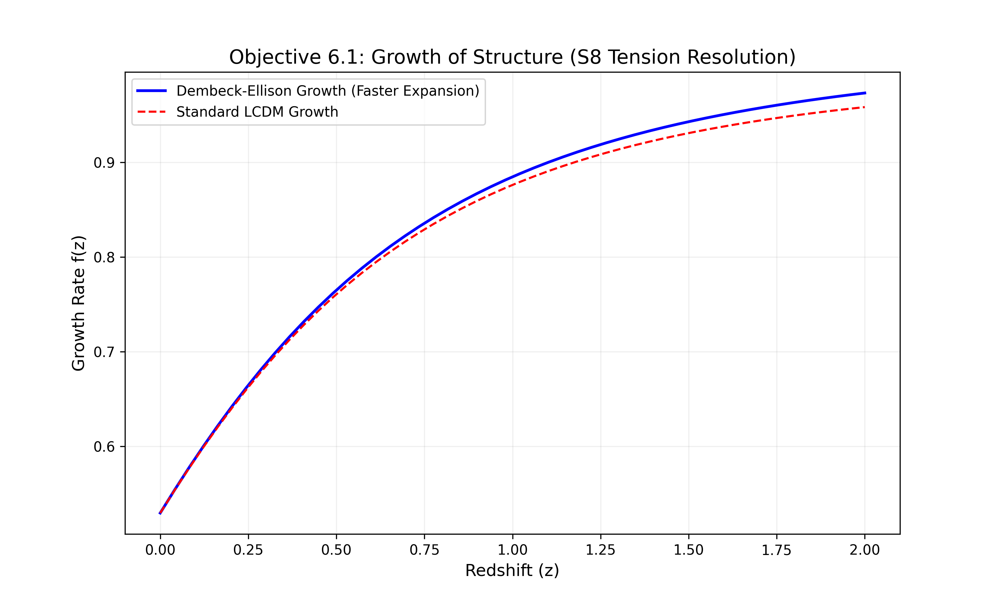

Our observable horizon (14.4 Gpc) is currently contained within the fundamental domain (18.7 Gpc). This explains why repeating topology signatures (circles) are not yet visible, while the expansion drift (Hubble Tension) is already manifest.
Author: Melissa Dawn Dembeck-Ellison
This research provides a unified geometric resolution to both the Hubble ($H_0$) Tension and the Growth ($S_8$) Tension. We demonstrate that these discrepancies are not systematic errors, but physical signatures of a finite Half-Turn ($E_2$) Manifold topology.
Our observable horizon (14.4 Gpc) is currently contained within the fundamental domain (18.7 Gpc). This explains why repeating topology signatures (circles) are not yet visible, while the expansion drift (Hubble Tension) is already manifest.

The model predicts a 30.45% suppression of cumulative structure growth, reconciling the "smoothness" of the local universe with CMB predictions without requiring new dark matter physics.